On the occasion that I have free time I enjoy baking. I bake a good amount of sandwich loaves and pastry. Also Pizza.
This is a very basic and mediocre Japanese Milk Bread. That's one good thing about fresh baked bread, even when it's mediocre it is still always worth it.
First you mix
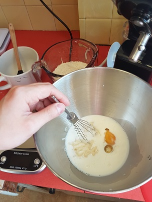Then you knead
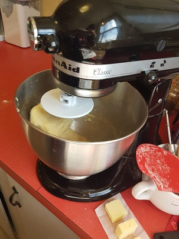And knead some more
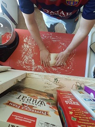After a rise, shape it
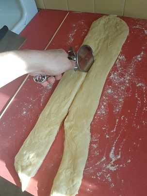And put it in the pan to rise again
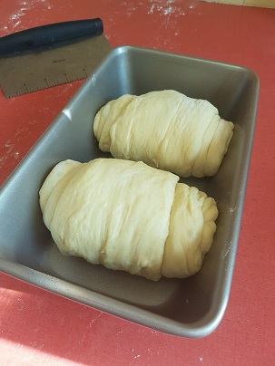Bake
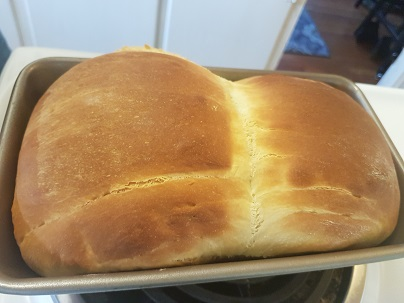Cover in butter
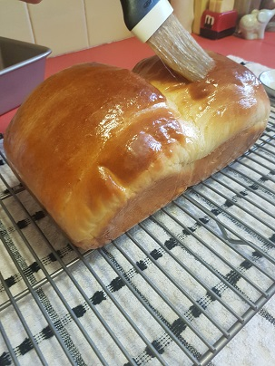Eat
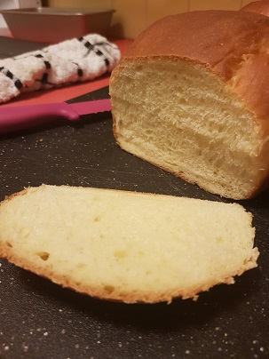Here's some other things I've baked.
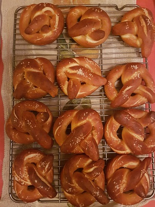 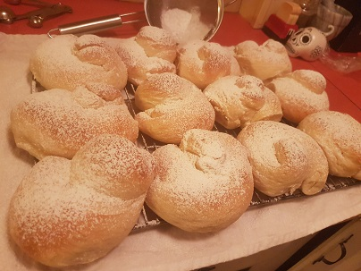 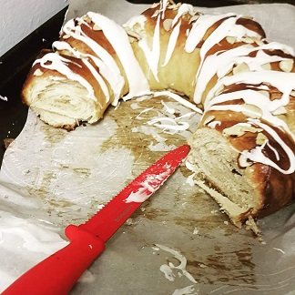 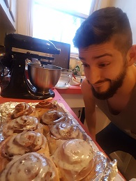 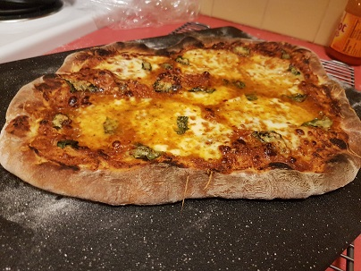 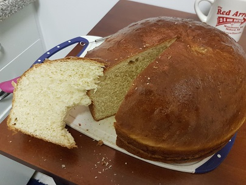 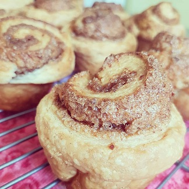Unrelated: The donuts were fried
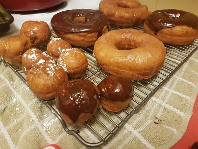